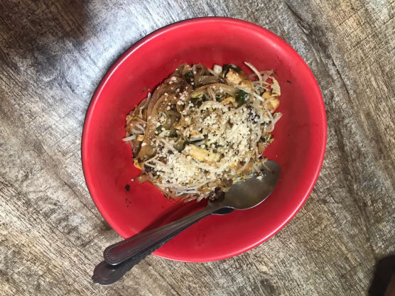
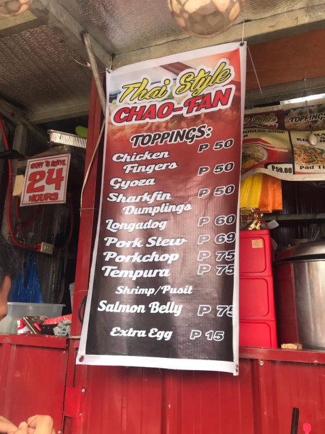
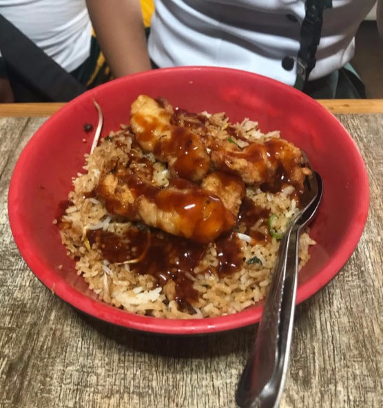
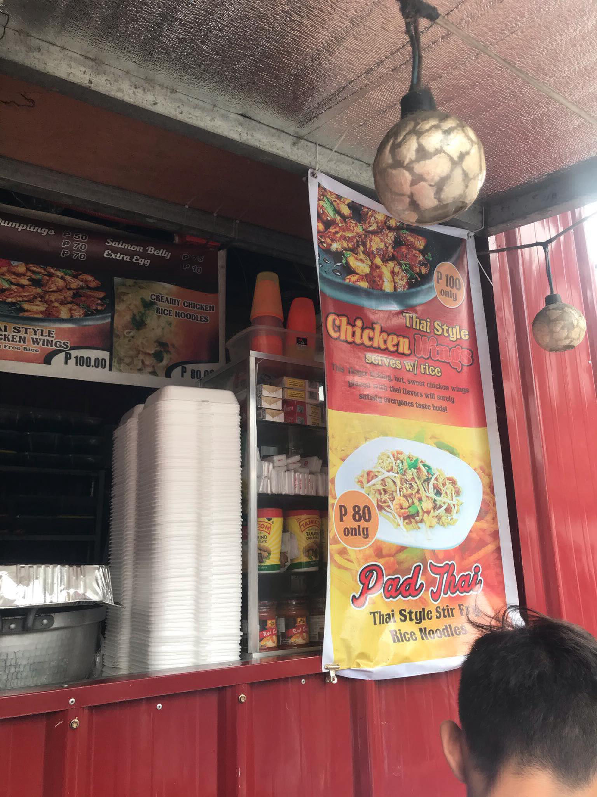

DORY'S SNACK CENTER Ang Dory’s ay matatagpuan sa sta. Isabel, Malolos. Ito ay kilala sa tinda nilang meryenda na abot kaya para sa mga istudyante dahil sila ay napapalibutan ng mga ekswelahan, Ma pa private man o Public. Ang kanilang inihahain ay ang Pinakasikat sa kanilang Menu na Carbonara, Ito ay hitik na hitik sa laman at malasang gatas, Hindi ito tinipid. Sa halagang 30-40 pesos ay tiyak na ikaw ay mabubusog dahil umaapaw ang serving. Ang kanila pang ibinebenta ay ibat ibang uri ng pansit at pasta katulad ng pansit palabok, Pansit luglog, at Spaghetti. Patungkol naman sa panulak ay mayroon rin silang kakaibang black gulaman na nilagyan ng yelo at gatas.
LIOMING'S Thai food ba ang inyong hanap? Tara na sa liomings! Eto ay isang kainan sa bayan ng amalolos. Ang kanilang sineserve ay authentic na thai food katulad ng Pad Thai! Kay sarap nito! May ibat ibang pagkain silang sineserve ngunit ang pinaka sikat ay ang kanilang pinagmamalaking Pad Thai! Na kay sarap naman talaga dahil malaman ito at mayroon kang pagpipilian na kung beef, pork o chicken ang sahog at sa halagang 80 pesos ay may meryenda ka na. Syempre hindi din papahuli ang kanilang rice toppings na umaapaw sa Thai Chao- Fan at ikaw ay tiyak na mabubusog! Ang presyo ng kanilang toppings ay nagkakahalaga ng 50 pesos para sa chicken fingers, Gyoza at Sharkfin Dumplings. 60 pesos naman para sa Longadog at 69 pesos sa pork stew. 75 pesos para sa porkchop, Tempura (Shrimp/Pusit) at salmon belly. Kung gusto naman ng extra egg ay 15 pesos. Ang kakaibang lasa ng kanilang chao-fan ang bumihag sa panlasa ng mga taga malolos dahil mapapawow ka talaga sa unang subo dahil tiyak na malalasahan mo ang thailand dahil sa pampalasang nilagay. Kung patungkol naman sa servings ay huwag mag alala dahil siguradong busog ka hanggang sa susunod na kainan. May binebenta rin silang Thai style chicken wings na nagkakahalagang 100 pesos na may kasamang kanina at mga noodle soup na nagkakahalagang 59 pesos pataas. Isa ito sa mga sulit na kainan at dinadayo sa malalos dahil hindi mo na kailangan pumunta ng thailand dahil sa kanilang pagkain ay parang nasa thailand ka na din.Maliit lamang ang kanilang tindahan ngunit kung ikaw ay mag dadine in ay may maliit silang pwesto sa second floor at matatagpuan ang hagdan sa gilid.
IHAWAN SA SAN PABLO Ihawaan sa San pablo! Dahil walang pangalan ang kainan na ito ay kami nalang ang nagpangalan. Ito ay sikat na sikat na ihawaan sa San Pablo at dinadayo ito sa sarap ng kanilang ihaw ihaw at suka. Juicy ang bawat kanilang tinitinda at kumpleto ito sa tinda katulad ng bulaklak ng baboy na mahirap hagilapin ay meron din sila! Kaya kay sarap talaga! Mabilis din maluto dito kaya hindi ka maiinip. Sa gilid nito ay may nagbebenta din ng buko sa halagang 12 pesos, Panulak sa ihaw-ihaw. Mura lang kanilang paninda at nagkakahalaga ang barbecue ng 12 pesos, 3 piso sa isaw, 5 pesos sa betamax, 12 pesos sa bulaklak ng baboy, 8 sa taba at balat ng baboy. Madami pa silang binebenta katulad ng chicken inasal, isaw ng baboy, helmet, adidas at isaw ng baboy. Sa inyong pagpunta rito ay hindi ka magsisisi dahil sulit ang byahe mo at uuwi kang masaya.
AMELITO'S SIZZLING HOUSE Ang Amelitos ay isang Sizzling House at matatagpuan sa crossing ng Malolos at ito ay harap ng Puregold jr. Ito ay tinangkilik ng mga estudyante kaya’t dumami ang mga store nito. Kung ikaw ay mapapadaan sa tanghali ay makikita mo ang mga edtudyante ng ibat ibang unibersidad at paaralan sa Malolos. Madalas ang mga estudyante rito dahil sa abot kaya nitong preso na nagsisimula sa 50-150 pesos. Ito rin ay isang unli rice, soup at gravy na kainan, sobrang sarap ng kanilang gravy at binabalik balikan talaga ito dito, kaya ito ay sulit na sulit talaga sa mga malalakas kumain! Madalas na kinakain dito ay ang kanilang Sizzling sisig dahil sa hitik na laman nito at sa init pag ito ay sineserve! Malamig na malamig din ang kanilang tubig palagi kaya talagang mapapasarap ang kain mo. May branch din sa Plaridel crossing.
EUROBAKE INIPIT Ipit na ipit! Kagaya ng Inipit sa Sikat na sikat na Eurobake! Ito ay sa Pagitan ng Malolos at Guiguinto. Ito ay isang matamis na tinapay na may umaapaw na palaman. Nagkakahalaga ito ng 180 pesos at may panghimagas ka na! Madami din silang mga pasalubong dahil kapag ikaw ay galing malolos ito talaga ang stopover.
BIKOY'S CHICHARON Krrrk! Krrrk! Krrk! Yan ang tunog ng chicharon ng Bikoy’s! Napakasarap at napakalutong na tila ba makakalimutan mo ang iyong pangalan pag nginuya mo na ito. Ito ay gawa sa Sta.Maria bulacan at binebenta rin ito sa bus ngunit may tindahan din ito na matatagpuan sa Malolos Crossing. Kaya ano pa ang hinihintay mo? Tara na at mag krrrk!


MAG-SUBSCRIBE SA AMING SOCIAL MEDIA ACCOUNTS!